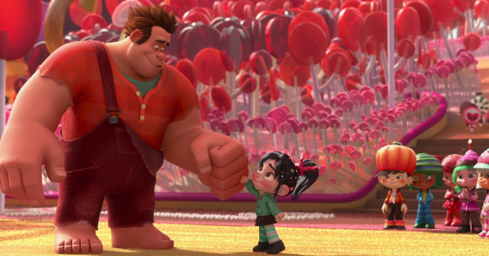

John Christopher Reilly é um ator de cinema, teatro e televisão norte-americano.Nascimento: 24 de maio de 1965 (idade 57 anos)
Sarah Kate Silverman é uma comediante de stand-up, atriz e escritora dos Estados Unidos.Nascimento: 1 de dezembro de 1970 (idade 51 anos)
Jack McBrayer é um ator e comediante americano. Em 2006, ganhou reconhecimento nacional por seu papel no filme Talladega Nights: The Ballad of Ricky Bobby.Nascimento: 27 de maio de 1973 (idade 49 anos)
Jane Marie Lynch é uma atriz, dubladora, escritora, cantora e comediante americana.Nascimento: 14 de julho de 1960 (idade 61 anos)
Alan Tudyk é um ator estadunidense.Nascimento: 16 de março de 1971 (idade 51 anos)

Projeto antigo Desde os anos 1980 a Walt Disney Pictures analisava a possibilidade de fazer um filme de animação envolvendo o universo dos videogames. Na época o projeto era chamado de "High Score" e, durante os anos 1990, foi renomeado para "Joe Jump". Nos anos 2000, quando a ideia enfim saiu do papel, os dois primeiros meses de desenvolvimento do roteiro trazia Conserta Felix Jr. como personagem principal.
O nome original é ( Wreck-it Ralph) foi lançado mundialmente em 2 de novembro do mesmo ano (2012). Os ganhos de bilheteria em todo o mundo alcançaram mais de US$ 471 milhões, com o filme tendo um orçamento de US$ 165 milhões.
Tem a duração de 1h 48min
É uma Comédia/Infantil
Topo da Página Acesse outro site sobre o filme